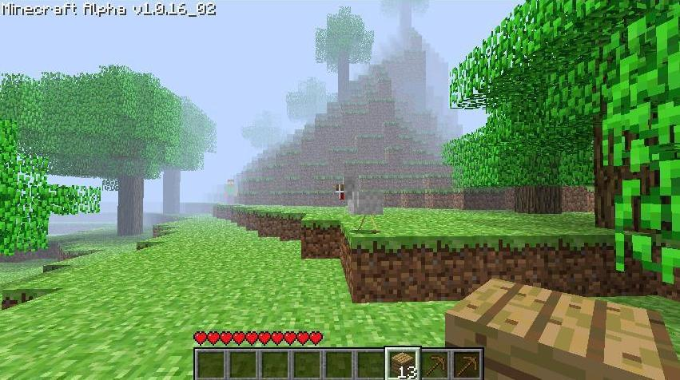

Minecraft Alpha — по ту сторону тумана
Мир яркой травы, простых пейзажей и тумана, за которым воображение рисовало больше, чем можно было увидеть.
Рассмотреть мир
Иллюстрация, связанная с легендой сообщества. Не является доказательством.Мир Alpha
Этот проект посвящён визуальному восприятию раннего Minecraft Java Edition Alpha и изображениям, которые в сообществе связывают с обозначением Alpha 1.0.16_02.
Глядя на эти кадры, мы обращаем внимание на детали, знакомые каждому, кто застал ранние версии игры: насыщенную зелёную растительность, простые пиксельные текстуры, незамысловатые формы рельефа и туманную даль, скрывающую границы прогруженных чанков.
Важно отметить: мы не утверждаем, что предоставленные кадры достоверно сделаны в указанной версии, так как их происхождение и отсутствие изменений не установлены. Этот архив — скорее попытка запечатлеть саму атмосферу.
Галерея
Лес за туманом
Лесной пейзаж: насыщенная зелень, простые текстуры и туман вдали.
Источник (Крипипаста Wiki)След на песке
Крестообразное углубление в песке. Необычная деталь изображения, происхождение которой не установлено.
Источник (Крипипаста Wiki)Тихая поляна
Лесная поляна: животные и выпавший предмет на траве.
Источник (Крипипаста Wiki)Легенда в кадре
Изображение, связанное с легендой о Хиробрине.
Источник (Minecraft Wiki)Примечание: первые три изображения происходят со страницы крипипасты. Они представлены как найденные иллюстрации, а не как подтверждённые архивные снимки оригинальной версии. Надпись с номером версии внутри кадра не является самостоятельным подтверждением происхождения.
Знакомые детали
Трава и листва
Насыщенные оттенки зелёного, видимые на лесных изображениях, создают ощущение густой, живой природы. Это один из главных цветовых якорей раннего Minecraft.
Смотреть кадр 01 ↑Текстуры блоков
Повторяющиеся пиксельные рисунки земли, травы и листвы создают узнаваемый визуальный ритм. Простота этих текстур оставляет много пространства для воображения.
Смотреть кадр 03 ↑Простые пейзажи
Формы рельефа и расположение объектов создают ощущение открытого, спокойного пространства. Мир кажется большим и ждущим исследования.
Смотреть кадр 02 ↑Туман
Ограниченная видимость на горизонте скрывает детали и заставляет дорисовывать недостающее. Туман превращает обычный пейзаж в место, полное тихой загадки.
Смотреть кадр 04 ↑Легенда в тумане
Хиробрин — персонаж легенд и крипипаст Minecraft-сообщества, а не подтверждённый обитатель оригинальной игры.
В историях игроков он предстаёт как загадочная фигура с пустыми глазами, которая появляется на периферии зрения, исчезает при попытке приблизиться или оставляет после себя странные изменения в мире.
Почему этот образ ассоциируется с загадочными наблюдениями? Старые скриншоты низкого разрешения, плотный туман, ограничивающий обзор, и недостаток информации порождали множество домыслов. В условиях, когда игра была не до конца изучена, любая странность могла показаться частью скрытой механики или проделкой неизвестной сущности.
Важно помнить, что Хиробрин — это элемент фольклора, а не реальная функция игры. Однако сама атмосфера ранних версий — с её туманом и чувством одиночества — прекрасно объясняет, почему эта легенда так прижилась.
Источники
- Minecraft Creepypasta Wiki: Alpha 1.0.16_02
- Скриншот 1 (Лес за туманом)
- Скриншот 2 (След на песке)
- Скриншот 3 (Тихая поляна)
- Minecraft Wiki: Alpha v1.0.16_02 (Java Edition)
- Изображение Хиробрина (Minecraft Wiki)
Примечание: Первые три изображения взяты со страницы крипипасты. Их подлинность и отсутствие изменений не установлены. Сведения о правообладателях и условиях использования необходимо дополнительно проверить на страницах файлов перед публичной публикацией.
Указание источника не заменяет разрешения на использование изображения.